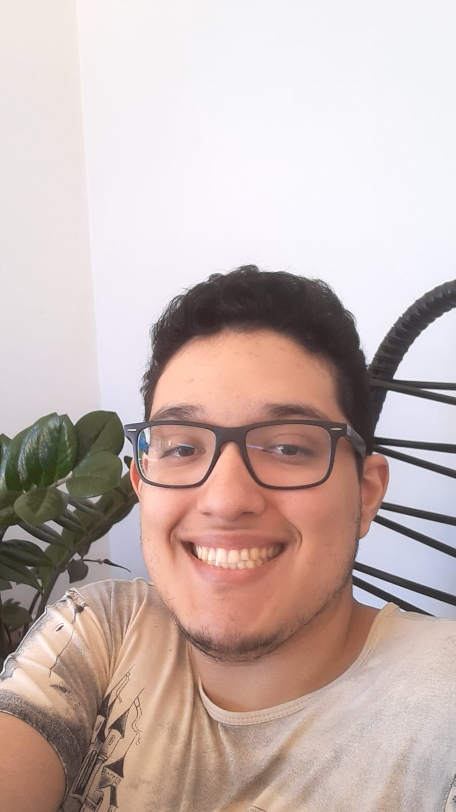

Quem Sou eu

Meu nome é Eduardo Giovani dos Santos Pivetta. Eu tenho 25 anos, e nasci no dia 26 de julho de 1999. Segue abaixo as minhas redes sociais: Instagram
Entenda o quão importante é um vilão em uma história, e a diferença entre que existe entre um vilão e um antagonista.